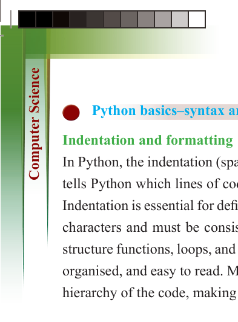
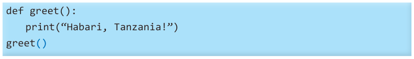
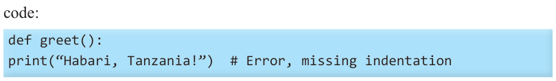

for Secondary Schools


Python basics–syntax and structure
Indentation and formatting
In Python, the indentation (spaces or tabs at the beginning of a line) is significant. It tells Python which lines of code belong together, such as inside a function or loop.
Indentation is essential for defining blocks of code. It typically consists of four space
characters and must be consistent throughout the program. Indentation is used to
structure functions, loops, and conditional statements, ensuring that the code is well-
organised, and easy to read. Maintaining proper indentation helps clearly define the hierarchy of the code, making it more understandable.
Example of a correct indentation:
You can use four spaces for each indentation level when nesting code, such as within
loops or functions. Maintaining consistent indentation ensures that Python correctly


interprets the program’s structure.


def greet():

print(“Habari, Tanzania!”)

greet()

Example of incorrect indentation:


If you do not indent properly, Python will show an error. Observe the following


code:


def greet():

print(“Habari, Tanzania!”) # Error, missing indentation


Python identifiers: rules, conventions, and best practices

An identifier is a name given to variables, functions, and other elements in a Python program. It helps us refer to these elements easily within the code.
Rules for naming identifiers in Python
(i) An identifier must start with a letter (A-Z or a-z) or an underscore (_).
(ii) It can be followed by letters, digits (0-9), or underscores (_)but it cannot contain spaces or special characters like @, $, /, %.
(iii) Python is case-sensitive, meaning “Name” and “name” are different identifiers.